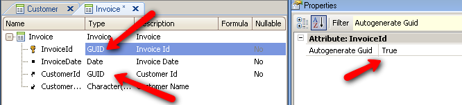

| False |
| True |
Generators: Android, Apple, Java, .NET
Level: Attribute, Variable
This property applies only at design-time.
In the example below, the primary keys of the Customer and Invoice Transactions are defined based on the GUID data type because several disconnected company branches, as well as the head office, need to always generate unique values for those primary keys.

Note that the Autogenerate GUID property of both attributes is set to True in order to always obtain a Global Unique Identifier automatically when an insertion is performed.
| Backlinks | ||
| Automatically generated identifiers synching conflicts | GUID data type | My first Offline Native Mobile application |